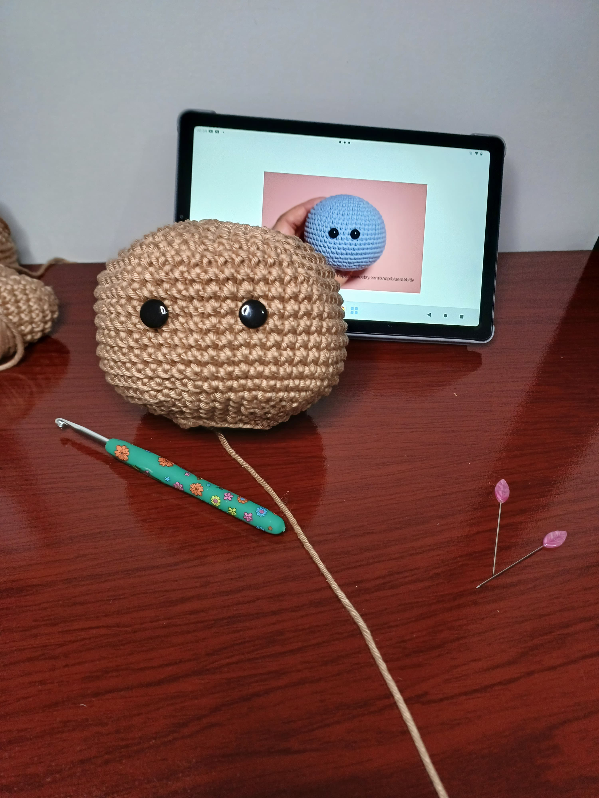

Há poucos dias recebi um comentário na publicação do vídeo do amigurumi do ogro Shrek na rede social Kwai, no qual a pessoa escreveu que gostaria de tentar mas não sabe como ou por onde começar. Sugeri, em uma resposta breve, começar com uma pequena bolinha, que foi inclusive a forma como comecei, mas senti a necessidade de uma resposta mais detalhada. Então, vamos a um sucinto guia para iniciantes; alguns pontos são básicos para confeccionar amigurumis e felizmente são pontos simples, de fácil execução. O domínio desses pontos é o primeiro passo para explorar o universo do crochê tridimensional, são eles:
Anel Mágico: É um círculo ajustável onde você começa a base do trabalho em crochê. Ele evita que fique um buraco no meio da peça, contudo, se o anel mágico for difícil nas primeiras tentativas, é possível começar com duas correntinhas e trabalhar na segunda, mas vale a pena insistir para aprender a fazer o anel mágico, afinal, citando a frase da designer de amigurumis, Mayara Prado; "a felicidade começa com 6 pontos baixos no anel mágico".
Baixo: É o ponto principal para manter a peça bem fechada e sem espaços visíveis, criando formas sólidas e estruturadas.
Aumentos: São tecidos dois pontos baixos no mesmo ponto para expandir o trabalho e criar curvas ou volumes.
Diminuições: Pegue apenas as alças da frente de dois pontos para diminuir de forma discreta (diminuições invisíveis) para um acabamento mais bonito.
Ponto Baixíssimo: Para finalizar carreiras, mover para outra área do trabalho sem criar volume ou fazer acabamentos.
É importante citar que além desses pontos, usar marcadores de pontos ou pedaços de linha em cor diferente do trabalho para não perder a contagem das carreiras e trabalhar com tensão uniforme dos pontos são fundamenta para que o amigurumi fique bem acabado.
Nesse vídeo, Amigurumi do Zero #2 - Crochetando a sua primeira bolinha, você aprende como tecer todos esses pontos, usar marcadores, contar pontos/carreiras e, ao final, tem sua primeira bolinha concluída. Foi exatamente com esse tutorial de Bia Moraes, uma das pioneiras na divulgação da arte do amigurumi no país, que aprendi a tecer minha primeira bolinha.

Somente com esses pontos é possível criar uma variedade de amigurumis incríveis mas, é bom começar com projetos simples, como bolinhas e corações, para desenvolver as habilidades e técnicas de modo tranquilo e gradual. Agora que você conhece os pontos básicos, e sabe por onde começar, já pode tecer seus primeiros amigurumis.